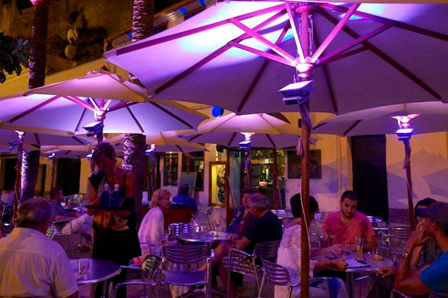

Minorque, unique aussi de nuit
 Minorque resplendit de jour mais également de nuit. Lorsque le soleil va se cacher sous le manteau de la Méditerranée, une autre île voit le jour. Minorque est animée, mais mettons de côté les grandes discothèques. Ce petit bout de terre a opté pour un choix de loisirs différents, dans lequel l’équilibre fait la différence. Si après un bon dîner vous avez envie de sortir et de découvrir ce que l’île a à offrir la nuit, on vous conseille de visiter le port de Ciutadella ou de Maó.
Minorque resplendit de jour mais également de nuit. Lorsque le soleil va se cacher sous le manteau de la Méditerranée, une autre île voit le jour. Minorque est animée, mais mettons de côté les grandes discothèques. Ce petit bout de terre a opté pour un choix de loisirs différents, dans lequel l’équilibre fait la différence. Si après un bon dîner vous avez envie de sortir et de découvrir ce que l’île a à offrir la nuit, on vous conseille de visiter le port de Ciutadella ou de Maó.
Ce sont sans aucun doute les deux principaux pôles sur l’île à proposer des loisirs nocturnes, où on y trouve des endroits de toutes sortes, depuis des ambiances chill-out jusqu’à des bars-discothèques en tout genre. En revanche, si vous souhaitez vivre une expérience inoubliable, vous ne pouvez pas rater l’occasion de visiter la Cova den Xoroi, une enclave unique située dans l’urbanisation de Cala en Porter (Alaior), où la légende situe la tragique histoire d’amour entre un homme mystérieux, Xoroi et une femme minorquine. Cette grotte ouverte sur la mer, offre des vues indescriptibles du haut de la falaise, elle accueille la discothèque la plus intime de Minorque. Un espace où on peut admirer les plus beaux couchers de soleil, prendre un apéritif en plein jour, se laisser aller par la musique chill out lorsque tombe le jour ou pourquoi pas danser au rythme effréné des prestigieux disc-jockeys quand la lune a pris place au soleil.
 Vous voyez, Minorque est aussi unique de jour comme de nuit. Une fois de plus, Minorque tout simplement.
Vous voyez, Minorque est aussi unique de jour comme de nuit. Une fois de plus, Minorque tout simplement.